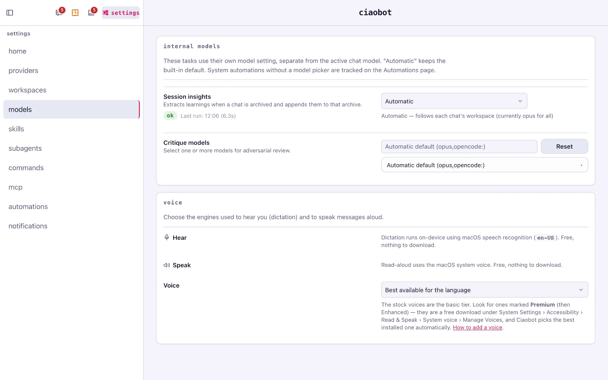

Any AI model
Bring the AI you already use
Ciaobot doesn't sell you a model or ask for an API key. It runs chats through one of two open agent tools you install and sign in to yourself, and adds the workspaces, memory, files and schedules around them.
Why Ciaobot doesn't build its own agent
The agent (the part that talks to the model, calls tools and edits files) is the hardest part of any AI tool, and Anthropic and the opencode team work on it full time. So Ciaobot builds on theirs and focuses on what they don't do: workspaces and projects, memory, assistant-tuned instructions and skills, and an app around it all. When Claude Code or opencode gets better, so does Ciaobot.
Claude: through Claude Code
For Anthropic's models, Ciaobot uses Claude Code, Anthropic's own agent, through its official SDK. That means you use your Claude subscription exactly as Anthropic intends (or an API key, if you prefer to pay per use). Sign in once with claude auth login and Ciaobot uses that session.
If the model you picked is busy or unavailable, Ciaobot steps down to the next one automatically instead of failing the chat.
Everything else: through opencode
For every other provider, Ciaobot uses opencode, an open-source agent that connects to dozens of providers:
- OpenAI models, with a ChatGPT plan or an API key;
- OpenRouter, for hundreds of models behind one account;
- Z.ai (GLM) and other hosted providers;
- Ollama Cloud, or Ollama running locally on your own machine, fully offline;
- LM Studio and any OpenAI-compatible endpoint.
Connect a provider with opencode auth login. Every model opencode can reach appears in Ciaobot's model pickers by itself.
You keep your plugins, skills and MCP servers
Ciaobot starts Claude Code and opencode with your normal settings, not a stripped-down copy. So whatever you've already set up there keeps working in Ciaobot chats:
- Claude Code: your skills, subagents, commands, plugins and MCP servers, plus the connectors you've enabled on claude.ai (Slack, Notion, Atlassian and so on).
- opencode: your global configuration, providers, plugins, skills and MCP servers.
On top of that, anything you add inside Ciaobot is shared by both tools: an MCP server you add in Settings → MCP, a skill in Settings → Skills, a subagent in Settings → Subagents. Ciaobot writes each one once and translates it into the format each tool expects. How to add your own →
Pick a model per workspace, per chat, per job
- Per workspace: Settings → Workspaces sets which tool each workspace uses by default, for example Claude for Work and a local model for Personal.
- Per chat: click the model chip in the chat header (⌘+⇧+M) to change model or thinking level. Switching to the other tool hands the chat over with its visible history.
- Per job: automations, memory extraction and the
/critiquereview panel each have their own model setting, so you can put cheaper models on background work.
